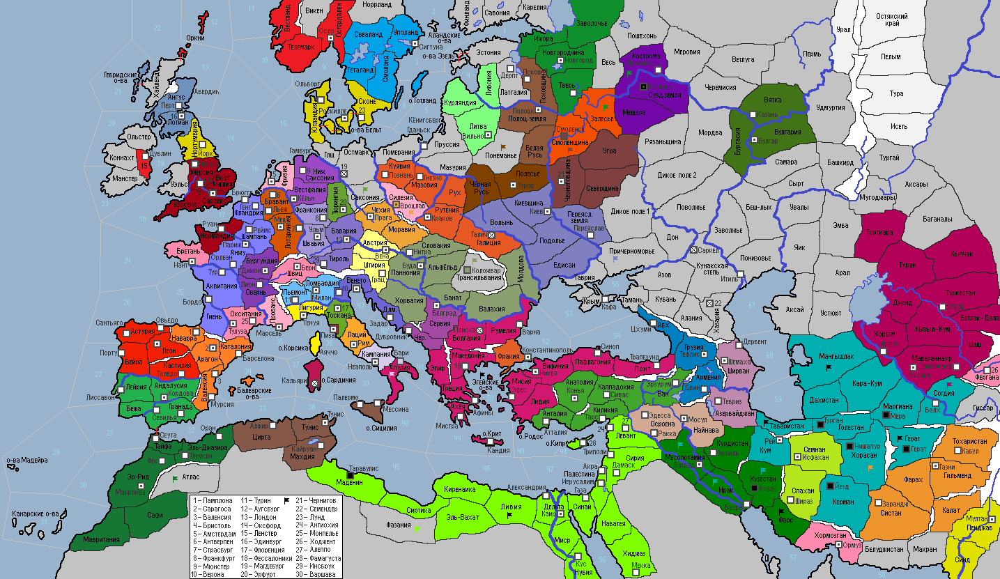

<== | 1 | | 2 | | 3 | | 4 | | 5 | | 6 | | 7 | | 8 | | 9 |
Сербия
Сербы, населявшие центральные территории Балканского п-ва, еще к середине IX века приняли православие. Со временем Сербия достигла уровня государственности и, воспользовавшись неурядицами в империи, обособилась из-под прямого управления Константинополя. [появляется фракция Сербия в составе одноименной провинции и Черногории с центром в г.Белграде]
· Гонения на иноверцев, учиненные в Сельджукском гос-ве, вызвали повсеместные восстания в стране: восстали Герат, Табаристан, г.Гурган, г.Йезд, г.Нишапур. Рабы подняли мятеж в г.Мерв. Не сумев подавить восстание в столице и Ширазе, султан Бюлент I сдает власть персидской оппозиции, возглавляемой представителями древнего рода Дештидов, которые провозглашают создание собственного государства в Семнане и Спахане [появляется фракция Дештидов]. Столица страны переезжает в г.Рей. Султан атакует Ирак, а потом делает марш-бросок в Месопотамию. Силы Сельджуков проигрывают сражение в Табаристане мятежной армии дейлемитов. · Подавлен мятеж рабов в г.Кордова! · В Буидской державе происходят восстания в г.Ахваз и Фарсе! Буиды проигрывают сражение сельджукам в Месопотамии. · Шииты принимают догмат «Газават». · Поляки начинают заселять Галицию. · Представитель новой династии Стенкилей занял трон в Швеции. · Восстания рабов в Ливии, г.Тарабулис, г.Антиохия! Сунниты принимают догмат «Шариат». Фатимидская армия разбивает рабов в Найнаве, помогая своему вассалу. · Литовское государство возглавляет Войшелк, сын покойного вождя Скирмонта. · Леопольд I Бородатый – новый эрцгерцог Австрии. · Симеон, прозванный Гордым, младший сын покойного Суздальского князя, убивает своих братьев, чем вызывает смуту среди подданных. Мятежники захватывают столицу! · Граф Тулузы Гийем II Сварливый умирает. Ему наследует сын Раймунд. · От вспышки оспы умирает правитель гос-ва Караханидов Тобга-хан… Войска караханидов атакуют и захватывают сельджукскую провинцию Согдия. Отряд караханидской конница погибает в Дахистане, вступив в бой с пехотой сельджуков. Пройдя из Эмбы через Арал караханиды атакуют сельджуков в Устюрте и вынуждают их отступить. Окончательно разбив врага в Мангышлаке, караханиды подвергаются удару восставшего населения и терпят поражение. · Черниговцы захватывают г.Смоленск. · Герцог Богемии Владислав II лично ведет войска на штурм г.Вроцлава и богемцы добиваются успеха. · В Венеции указом дожа Альберто Чельси закрывается бордель «Красная стрелка»: недовольные представительницы древнейшей профессии вышли на площадь Сан-Марко. · Газневиды вступают в войну против сельджуков и захватывают провинцию Хорасан. · Евреев попросили удалиться из Шотландии. · Император Фотий Палеолог трусливо сбежал из столицы в г.Никея, не в силах оказать сопротивление восставшей знати. Сделав Никею своей столицей, император стал именовать себя «императором Никейской империи». Власть в Константинополе взяли воинствующие священослужители. [фракция Византийская империя меняет свое название на Никейскую империю, образуется новая фракция Византийский экзархат] · Новгородская республика объявляет войну Суздальскому и Смоленскому княжествам. Под покровом ночи новгородцы неожиданно атакуют лагерь суздальской дружины в Залесье и пленяют суздальского князя Симеона Гордого. Далее следует удар в провинцию Кострома, которую северяне берут без боя.